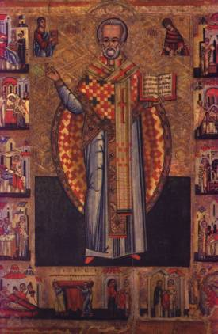

St. Nicholas – Patron Saint
Part 2
The second category is that of material aid. St. Nicholas looked after dowries, supported the poor (including hobos!), brought material prosperity, returned lost or stolen goods, and protected the possessions of those who owned them. Anyone who received an unexpected gift thanked St. Nicholas.
Nicholas also became a favorite patron of guilds and
confraternities, as he was associated both with helping the poor and with
merchants and banking. Because of his association with students and the poor,
he became associated especially with the Friars Minor (Franciscans); the proper
name of Greyfriars at Oxford is actually the College of St. Nicholas.
There were brotherhoods of St. Nicholas, we know, in
Italy in the thirteenth and fourteenth centuries – in Bologna, Siena, and
Florence, at least – whose members were obligated to special prayers and
charities.
In the towns of North and East France, Chartres,
Troyes, Vitry, Toul, Pont-de-Mousson, Charmes, Luneville, and Veyelise for
instance, in Anjou and in Brittany, one finds similar confraternities.
The third category comprises the occupations of
transportation, communication and traffic. Nicholas was the patron
Saint of sailors and all who went down to the sea in ships. So strongly did the
Greeks and Russians seafarers count on his protection, that for hundreds of
years no ship of theirs sailed the seas without carrying an icon of St.
Nicholas and a perpetually burning lamp.
In Greece, where St. Nicholas is currently one of
the most popularly honored Saints according to a recent authority,
“everyone connected with seafaring appeals to him for protection and relief. All ships and boats carry his ikon with an ever-burning lamp, and in his chapels, models of boats, coils of cables, anchors, and such things, are given as votive offerings. Pirates even used to give him half their booty in gratitude for favors received. On account of his worship, St. Nicholas has been said to have supplanted Poseidon, for the cults lie along the same lines. During a recent strike at the Piraeus the seamen swore by St. Nicholas not to yield, and they would not break their vow although they wished to compromise. The Archbishop had to come specially to release them from their oath.”
Sailors in the Aegean and Ionian seas, following a common Eastern custom, had their “star of St. Nicholas” and wished one another a good voyage in the phrase “May St. Nicholas hold the tiller.”
Knowledge of St. Nicholas spread all around the
shores of the Mediterranean Sea and his reputation found a home in every port.
When the boatmen of the Scheldt, Meuse, and Moselle rivers adopted him from
their seafaring brothers, his fame gained steady access to the hinterlands.
Grain merchants remembered the story of the boats
bearing wheat from Alexandria which stopped at Myra and saved its people from
starvation. The carriers of coal and the dockworkers, longshoremen, and the St. Nicholas brotherhood of grocers, no
doubt owed their origins to the same incident.
In Germany Nicholas became (as St. John Nepomucene
was to become later) patron of bridges, and people hastened to place statues or
even chapels dedicated to him upon them.
Before he became the special friend of students and
youth, he was a patron Saint of pilgrims and (endangered) travelers, who must
have carried his stories with them as they journeyed.
First of all this refers to transport across the sea: the all-important sailors’ patronage. Those of fishermen, riverboat crews, drivers, carriers, bridge builders, and so forth, who put themselves under St. Nicholas’ protection, can be considered as analogous extensions.
As patron of sailors, St. Nicholas was also adopted
by professional fishermen, and all those who trades were connected with rivers,
such as the association of the
thirty-four sworn Master-Vendors of wine in bulk by river, and thus, be
extension, wine gaugers and cellarers. The Seine area offers us indications of
a number of similar corporations.
Thought to Ponder:
Thought to Discuss around the Dinner Table:
St. Nicholas – Patron Saint
Part 2
